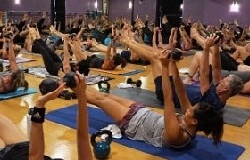
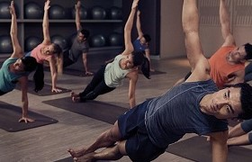
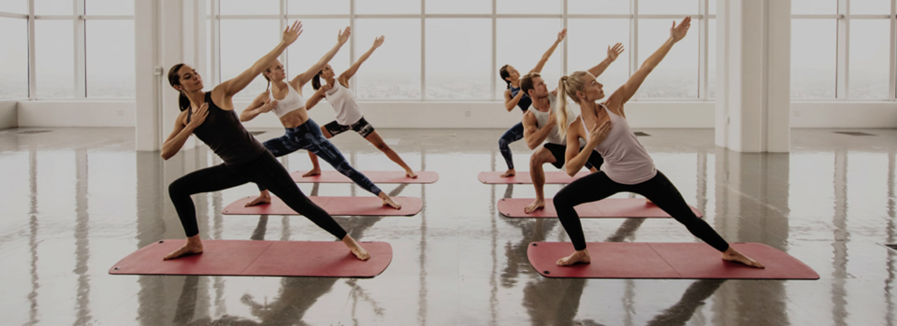

|  |
Pilates is a form of exercise which concentrates on strengthening the body with an emphasis on core strength. This helps to improve general fitness and overall well-being.Pilates also focuses on the mind-body connection. While doing the various exercises your mind needs to be constantly aware of your breathing and the way your body moves
|
|  |
Hatha Yoga improves your agility, strength, balance and body awareness. You work with your breath so you can get deeper into the positions and release tension in your body. A respite in everyday life that gives inner peace and surplus. Hatha Yoga balances strength with agility and movement with meditation. The focus is on slow positions and stretches at a leisurely pace where everyone can join.
- Incresed agility
- Resolving muscle tension
- Stress and mental well-being
|
|  |
BodyFlow is one of the popular team training concepts from Les Mills. The team combines a wide variety of elements from several exciting training modes. You can experience exercises from Yoga, Pilates and Tai Chi. As the inspiration for the hour comes from several different types of training, you get a versatile hour with lots of benefits. You will thus work with your agility and attitude, through a series of choreographed movements and stretches. Furthermore, you work with your core muscles as you know it from Pilates. The whole hour takes place in a pleasant flow so that you not only enjoy the physical exercise; the concentrated atmosphere also contributes to a calm mind. BODYFLOW must be seen as both a workout and a nice respite in a busy day. The hour has a great focus on the breath, which also contributes to calm.
NOTE: The hour may vary from 55 minutes to 65 min, all depending on the program.
|